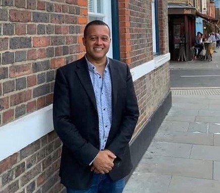

In March 2018, UMAT was established by vocalist Stephen Pierre as a grassroots community music company (CIC) based in London.
Operating as a not-for-profit group, our primary objective is to showcase and support the talents of both aspiring and seasoned musicians.

A vocalist and creative director with a passion for community cohesion. Stephen founded UMAT to bridge the gap between music education and professional performance.
Live music is becoming inaccessible for many young artists due to venue closures. UMAT exists to keep community music alive, inclusive, and free for everyone.